How To Use:
X and Y co-ordinates:
The set is within a circle of radius 2, with (0,0) as the centre. These entries specify the coordinates at the centre of the screen.
You can also set coordinates by clicking a point on the screen.
Zoom:
The increment button will multiply the zoom by the value in the entry box.
The decrement button will divide the zoom by the value in the entry box.
The zoom can be set to negative numbers, but will zoom out infinitely if set to 0.
Any zoom past 50000000000000 will render the image pixelated.
Iterations:
This value is how many times the computer checks each point. If the image appears like this:
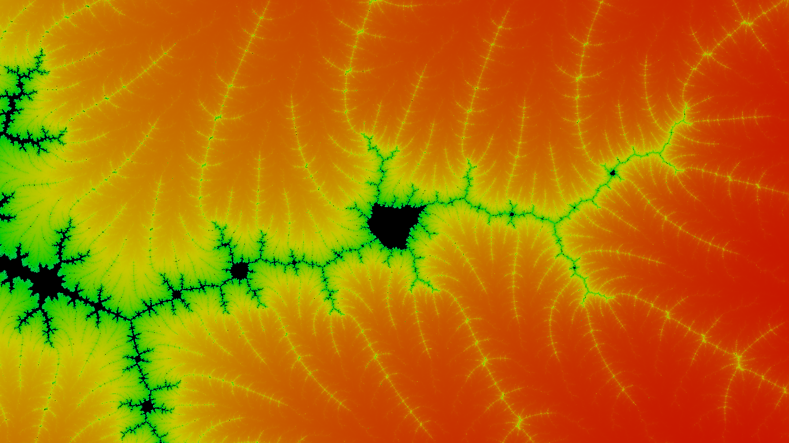
Try increasing the iterations. Here is the same image, with the iterations increased:
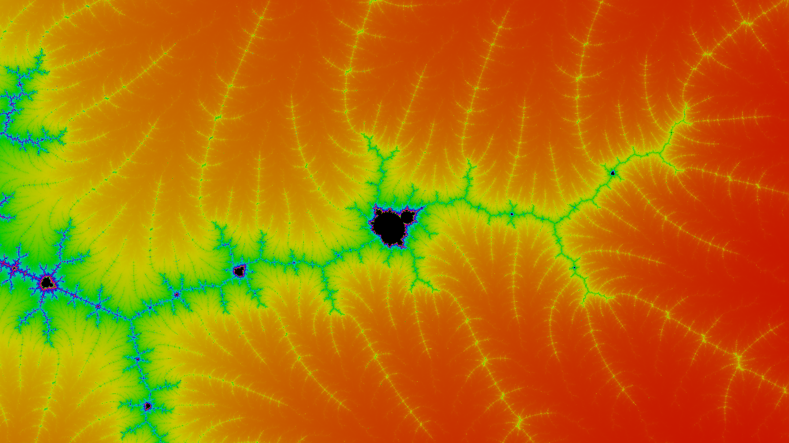
Canvas Size:
These fields change the width and the height of the screen in pixels.
If the area of the screen is two big, the height will diminish to prevent the browser from crashing.
Colors:
The RGB setting will focus the color around red, green, and blue.
The rainbow setting displays rainbow colours.
For example:
Rainbow:

RGB:

The Color Difference entry controls how much the colored areas differ from one another in color.
Generally as you zoom in, the image will be better if you decrease the color difference.
This value can be set to any number above or equal to 0.
For example:
Color Difference 10:
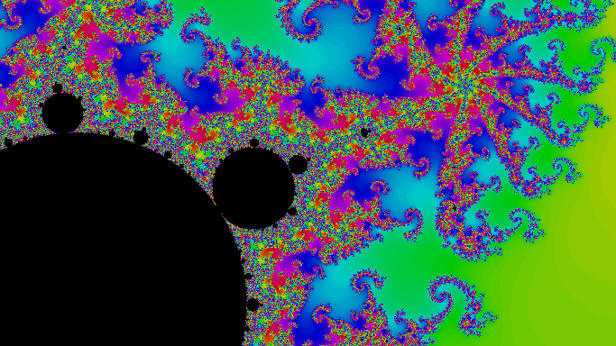
Color Difference 4:
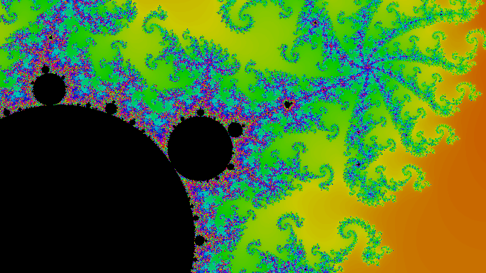
Color Difference 1:
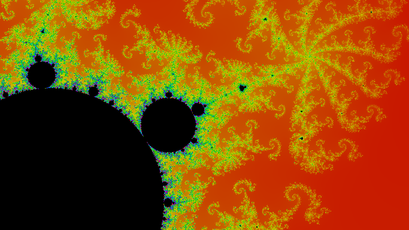
Brightness just controls the brightness of the image.
The Color Begin entry controls the color that represents the area outside the circle, and changes all the other colors accordingly
For example:
Color Begin 0:
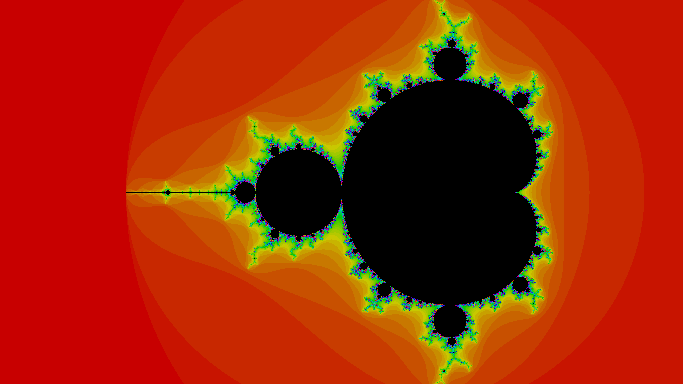
Color Begin 300:
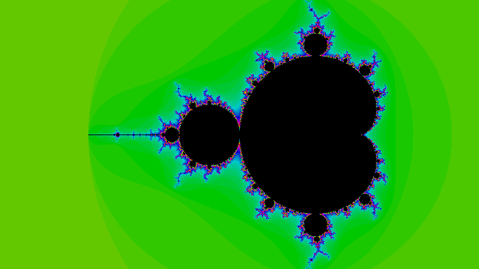
Color Begin 600:
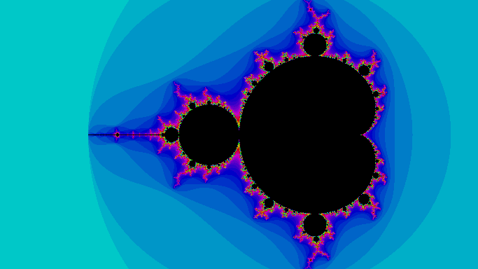
Color Begin 900:
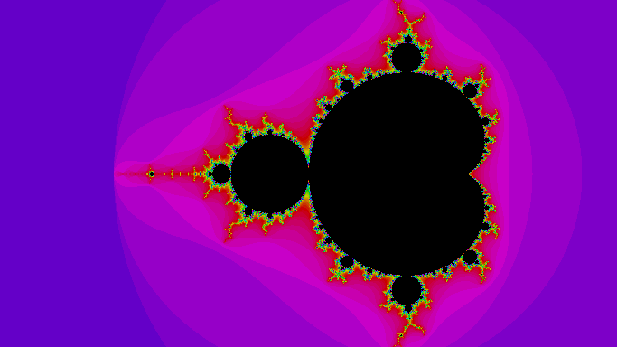
The In Set Color color picker controls the color of the points that are in the mandelbrot set.
Its default color is black.
For example:
In Set Color: #1313ee
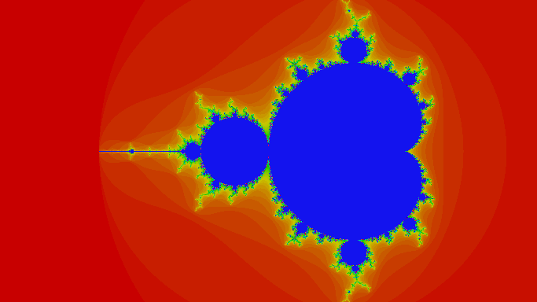
In Set Color: #057f21
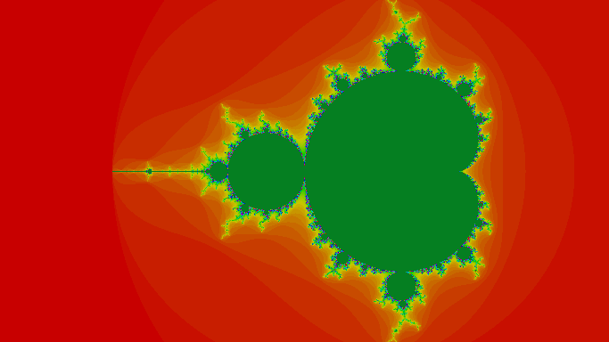
In Set Color: #ffffff
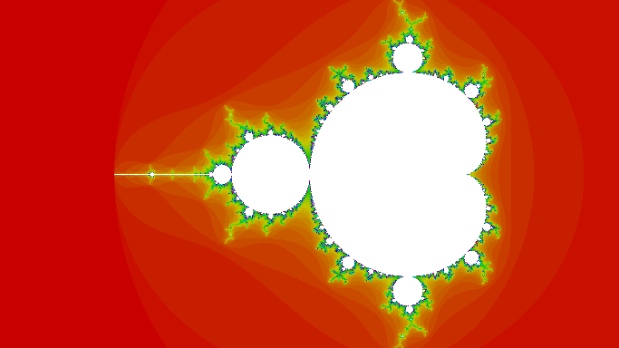
Thats all! Have fun!